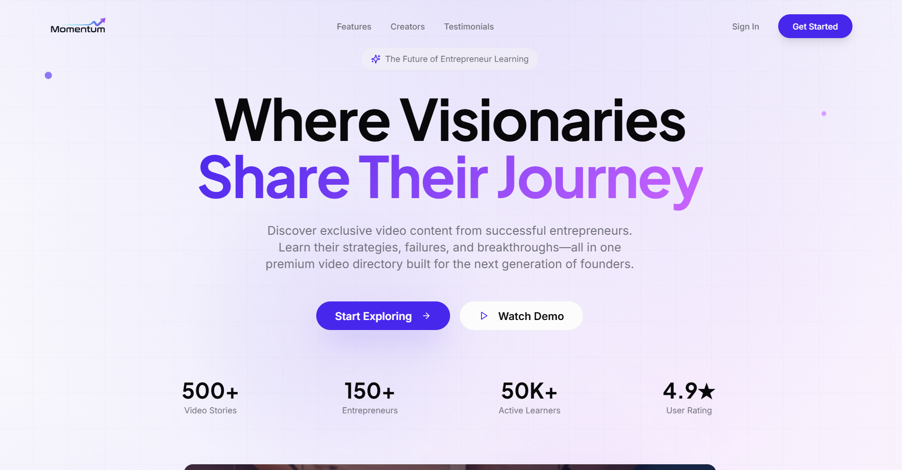

Featured- Developed a premium video content platform tailored for entrepreneurs, delivering curated insights from successful founders.
- Implemented multi-role authentication supporting viewers, content creators, and administrators with role-specific access control.
- Built a custom interactive video player with advanced controls and smooth animations using Framer Motion.
- Designed a scalable, modular frontend architecture using React, TypeScript, and shadcn/ui for long-term maintainability.
- Integrated analytics dashboards to track user engagement and content performance for creators and admins.
- Delivered a fully responsive, theme-aware UI with automatic dark/light mode switching using Tailwind CSS.